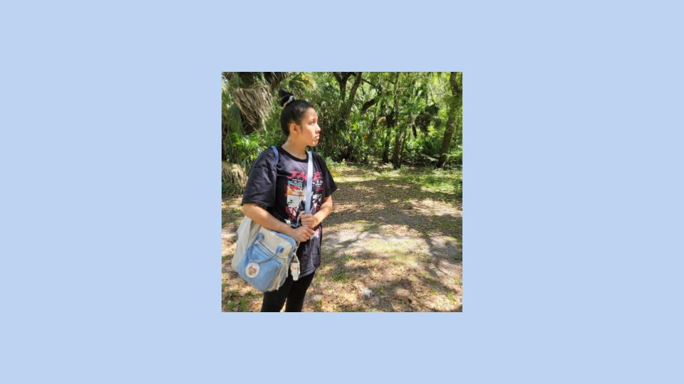
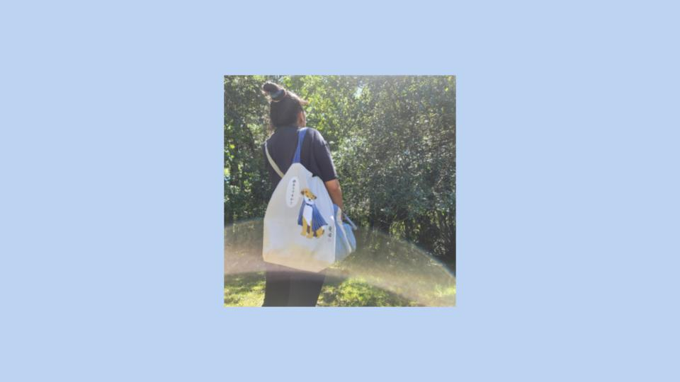

About Kyra

Kyra is a young college student that is an aspiring actress, content creator, and video editor.
She is 22 years old and very passionate about her work.
Due to gaining slightly more experience over the course of this summer, she has narrowed down her work field interest into a focus on the entertainment industry. Business and Marketing is still a very viable and valuable industry to have knowledge in and there are many perks when it comes to needing to have that knowledge for marketing on creative, entertainment related projects as well.
Ideally the film/tv or music industry are both areas of interest when it comes to Kyra's dream jobs.
Of course to every young Asian-American, with how popular K-Pop and K-Series, WEBTOONS, and Thai Dramas/Series have gotten lately, it is not a surprise that the ultimate dream job that Kyra has and can relate to many others with is to be a KPOP Idol under HYBE Labels or P-Nation. Or to become a successful actress that can represent the Lao-American Community through mainstream media and being able to use a future platform and exposure to educate people more about the very lesser known country and cultural things as well as any historical issues that may still need attention on.
